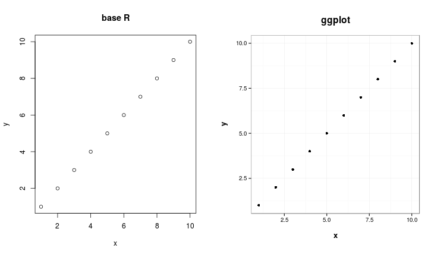

Advanced Programming in R
Florian Detsch
Last modified: 2017-11-05
Preface
The following R tutorial is not for beginners. This might seem odd at first since most tutorials tend to start with the very basics of the language, e.g.
1 + 1## [1] 2or, when it comes to using variables instead of calculator-style raw numbers,
a <- 1
b <- 1
a + b## [1] 2Well, let’s assume you are already familiar with such things. In fact, maybe it is because of the overwhelming number of R tutorials on the web that this particular tutorial starts a little later, after the first excitement has settled and one has grown familiar with the syntax and the basic commands.
All well and good, of course, but soon you will notice that you could use a little more of the stuff you heard R was capable of. There is, for instance, the saying that using for loops in R is not quite convenient - as opposed to other programming languages like C++. So how is that, and what should I use as an alternative?
The same possibly applies for base graphics. Sure thing, everyone of us has been excited at some stage about the professional default style of R’s artwork, not least because of the rather awkward MS Excel style that is still widely applied in the field of academic research, among others. Well, decide for yourselves which of the following figures – that were both created using (almost) default settings only – is more appealing for you.

It could also be conceivable that you came across a work step that required massive computational power, and thus took quite long to finish. R, by default, uses only one core on your machine, which could likely be the reason for the slow performance of your code. If you haven’t heard, you can actually tell R to use multiple cores to reasonably split up slow peaces of code and make certain operations perform much faster. Today, most machines come with at least 4 internal cores which makes it easy to do such stuff.
You see, there’s plenty of applications that definitely go beyond the scope of a base-R programmer’s skills. In case you’ve felt a continuously rising interest while reading this short introduction, you might want to browse the following chapters of this tutorial on ‘Advanced Programming in R’ and see for yourselves.
Some technical remarks before starting out:
This tutorial is published under the creative commons license ‘Attribution-ShareAlike 3.0 Unported (CC BY-SA 3.0)’.

It has constantly evolved over the years and has lately become an annual course in the event calendar of the MArburg University Research Academy (MARA). Of course, comments, feedback, suggestions and bug reports are always welcome and should be directed to florian.detsch{at}staff.uni-marburg.de.
Please note that we adhere to the format conventions introduced by Xie (2016) in his introductory book about the R bookdown package. Accordingly, we do not add prompts (> and +) to the R source code presented herein, and text output is commented out with two hashes (##) by default, for example:
cat("Hello world.\n")## Hello world.This is meant to facilitate copying and running the code, while the text output will be automatically ignored since it is commented out. Package names are in bold text (e.g., grid), and inline code and file names are formatted in a typewriter font (e.g., grid::upViewport(0)). Function names are followed by parentheses (e.g., grid::viewport()). The double-colon operator :: means accessing a function from a particular package.
Enough talking now, let’s dive into the coding work!
References
Xie, Yihui. 2016. bookdown: Authoring Books and Technical Documents with R Markdown. Chapman & Hall/CRC the R Series. CRC Press.